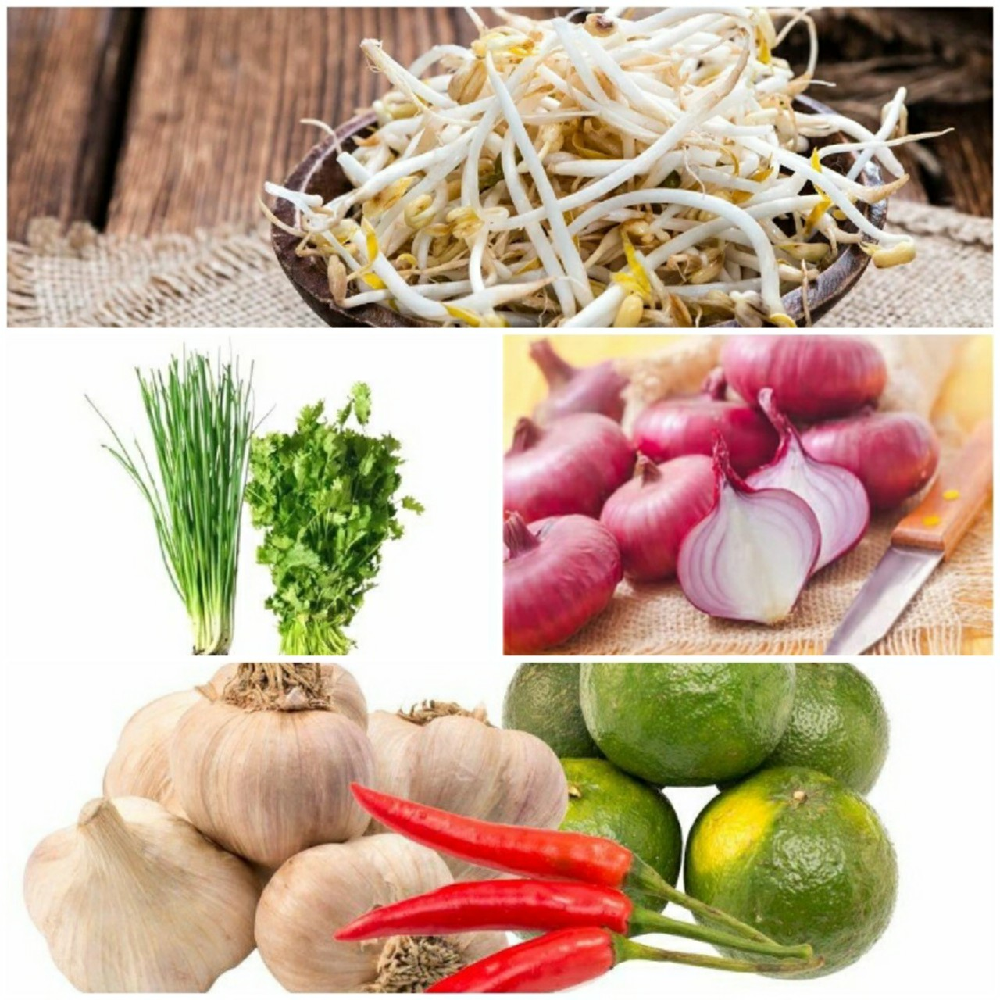

The “Cháo ám” bowl in the picture is a traditional dish from Trà Vinh, made from rice and broth.
The porridge is smooth and emits an enticing aroma. On the surface of the porridge, there are some slices of snakehead fish, accompanied by finely chopped herbs. The “Cháo ám” bowl is a delicious and nutritious dish.
The porridge has a sweet and clear taste, with the rich texture of rice, snakehead fish, and aromatic herbs.
This dish is suitable for everyone, especially for those recovering from illness or the elderly.
General Overview:
"Cháo ám" is a culinary symbol of Trà Vinh.
Since stepping foot into this region, you won't be able to resist trying a bowl of "Cháo ám", a unique dish that even its name is intriguing.
"Cháo ám" is not an unfamiliar dish, but it has its own origin and a unique story hidden behind its name.
The name "Cháo ám" never fails to intrigue those who first set foot here.
Initially, it was a dish made from snakehead fish porridge, but the related story gave rise to this name.
In the tradition of this region, before becoming a
bride,
every woman had to face a unique challenge: to cook a delicious pot of snakehead fish porridge.
This, despite being simple in terms of ingredients, was not an easy task to overcome, given the scrutiny from the mother-in-law.
As a result, the pot of snakehead fish porridge became an obsession for young brides, and from then on, it was called "Cháo ám".
Despite its ancient origins, this delicious dish has undergone a long journey, making its appearance at Chau Thanh
Market
in the 1930s.
Back then, fish congee was a popular breakfast option widely sold at the market and major roads within the district.
While the preparation method is not overly complex, to create a delicious bowl of congee, the cook must have experience selecting rice, fish, and spices properly to achieve the distinctive flavor unique to fish congee.
The most crucial element is choosing the main ingredient, the snakehead fish.
To make a delicious snakehead fish congee, the fish must be fresh and firm.
The people of Tra Vinh often prefer to use
"wild snakehead fish"
for its distinctive natural flavor.
However, due to the increasingly scarce source of fish, people have opted for
farmed snakehead fish
as a substitute.
In addition to fish, the use of fragrant rice is also an essential element.
Rice for making congee is usually unpolished, not roasted as when making savory congee, in order to preserve its natural, delicious taste and distinctive aroma.
When the congee is cooked, it will have a natural and enticing white color, making you forever remember the taste of Trà Vinh's land.
The Way To Make "Cháo Ám":
The traditional way:
Ingredients:
1.
Snakehead fish
: 1 unit
2.
Rice
:200gr
3.
Fresh squid
:500g
4.
Dried shrimp
: 50gr
5.
Secondary ingredients:
Bean sprouts, onions, cilantro, purple onions, peanuts, lemon, ginger, and chili
6.
Spices:
Salt, sugar, cooking oil, fish sauce,...
The steps to follow:
Step 1: Prepare the fish
Wash the fish thoroughly and remove all the internal parts for fish gut cleaning.
Cut off the fish's mouth and tail.
Step 2: Boil the fish
Boil a pot of water.
While waiting for the water to boil, slice the ginger into thin strips and cut the squid into bite-sized pieces.
Once the water is boiling, add the fish.
When the fish is cooked, remove it from the pot and let it cool.
After the fish has cooled, separate the meat from the bones.
Next, sauté the purple onions until they turn golden, then add the fish.
Stir gently to make the fish firm.
Add a little fish sauce and pepper to make the fish meat more flavorful.
Step 3: Cook the porridge
In a pot, cook the rice porridge for about 30 minutes until it thickens.
Then, add squid and dried shrimp to the pot to enhance the sweetness of the porridge.
After another 15–30 minutes, when the porridge is fully cooked, prepare various side vegetables and ladle the porridge into a bowl to enjoy with the freshly prepared fish slices.
Source: excerpt from the YouTube channel "Trà Vinh"
The Way To Modify:
"Cháo ám", a culinary icon of Trà Vinh, never ceases to carry within itself diversity and creativity.
Bold variations, distinctive highlights for each ingredient and cooking style have transformed "Cháo ám" into a culinary showdown between tradition and innovation.
In this culinary map, the snakehead fish, with its characteristic flavor at the forefront, can be replaced by other fish such as
basa fish,
alligator gar,
or
catfish
to bring about a fresh and diverse feast of flavors.
Sauce sets the rhythm of the dish, and it also varies depending on how each person uses it.
Congee is no longer limited by its main ingredients.
Pomegranate seeds,
with their unique crispiness, are creating an interesting twist in congee.
Sticky rice
or
brown rice,
is changing the color and nutritional value of congee without ever diminishing its worth.
In terms of ingredients, some have elevated the humble rice porridge by incorporating seafood, such as
shrimp,
squid,
or
clams,
creating a fantastic culinary experience.
Finally, there are those who dare to step out of the traditional kitchen to cook rice porridge using an
electric rice cooker.
This is a blend of modern convenience and traditional flavors, creating a unique and contemporary porridge.
"Cháo ám" is not just a dish; it's a creative journey where everyone can craft their individual taste, symbolizing the essence of the Trà Vinh region.
How To Make Dipping Sauce:
Fish sauce:
Pure fish sauce.
Typically, there will be a plate of lemon and chili, and you can add lemon and chili according to your taste.
Enjoy The Product:
With this delicious "Trà Vinh" dish, there are many ways to enjoy it. You can eat it as a regular porridge, such as organ porridge or seafood porridge. Alternatively, you can learn to savor it in the authentic "Trà Vinh" way to experience its distinctive flavor. Typically, locals will mix the porridge and snakehead fish together and enjoy it quickly and conveniently. To balance the flavors of this dish, people in "Trà Vinh" eat it with
bitter vegetables,
bean sprouts,
banana flowers,
and various herbs like onions and cilantro. An important element that contributes to the special taste of this porridge is the dipping sauce. In the past, people in "Trà Vinh" preferred a dipping sauce made from fish sauce, lemon, and chili, mixed thoroughly, and used for dipping the snakehead fish. However, nowadays, to make the dish more widespread and suitable for diverse regional cuisines, people often opt for a dipping sauce with garlic and chili. The sweet taste of the fish, combined with the salty and spicy flavors of the dipping sauce, creates an alluring and irresistible taste, which, in the language of the Western region, is
“hết sảy”
delicious.